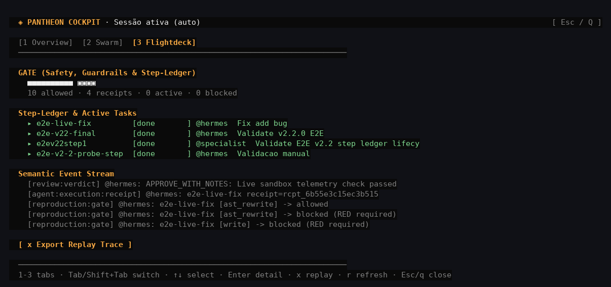

Livro de Receitas do Pantheon: Fluxos Práticos do Dia a Dia¶
🇺🇸 English version available: Read in English
Este livro de receitas reúne fluxos práticos prontos para copiar e colar no Pantheon v2.2.0 (OpenCode 2.x nativo) — cobrindo onboarding Zero-Init, os 14 agentes especialistas, as 30 ferramentas TypeScript nativas, os 9 comandos de servidor e as 5 superfícies interativas de TUI.
Receita 0: Setup Zero-Init e Atualização Segura (OpenCode 2.x)¶
Cenário: Habilitar o Pantheon em qualquer projeto ou worktree Git sem sujar o repositório com arquivos copiados.
Comando:
opencode plugin add pantheon-opencode@2.2.0
# ou para atualizar uma instalação existente:
opencode plugin update pantheon-opencode
Por que funciona melhor:
- Todos os 14 agentes, 9 comandos de servidor, instruções globais e 30 ferramentas nativas carregam direto em memória.
- Na TUI, use /pantheon-updates para verificar atualizações no npm e limpar caches obsoletos automaticamente.
Receita 1: Funcionalidade Full-Stack com TDD e Portão de Qualidade¶
Cenário: Implementar uma funcionalidade completa (ex.: endpoint de exportação CSV com validação de schema e testes).
Prompt:
@zeus Adicione suporte a exportação CSV em /reports com testes unitários e validação de schema.
Fluxo de Execução:
1. @zeus analisa o escopo, opcionalmente executa detect_stack, e delega o planejamento à @athena.
2. @athena estrutura fases e critérios de aceite; ambiguidades usam o diálogo nativo question.
3. @hermes executa as etapas rastreadas no pantheon_step_ledger (inclusive com sub-sessões isoladas via execute_step quando necessário) — testes RED primeiro, depois código GREEN com diagnósticos LSP pós-edição (tsc / pyright / stdio / TCP pool).
4. @themis executa linters, auditoria de segurança e emite o parecer estruturado via pantheon_review_verdict.
Receita 2: Correção Expressa em 1 Turno (@talos)¶
Cenário: Corrigir um estilo CSS, typo ou import ausente sem cerimônia de planejamento.
Prompt:
@talos Altere a cor de fundo do botão de login para verde esmeralda em login.css usando hashline_edit
Por que usar @talos?
@talos é a via rápida do Pantheon: zero sobrecarga de subagentes, edições cirúrgicas via hashline_edit (confinado à raiz do projeto) e verificação imediata.
Receita 3: Bugfix TDD com Portão Mecânico RED e Rollback Atômico¶
Cenário: Corrigir um bug confirmado em produção impedindo que o agente pule o teste de reprodução ou deixe o working tree sujo em caso de falha.
Prompt:
@zeus Corrija o bug de arredondamento de imposto em src/billing/calc.ts exigindo primeiro um teste de reprodução falhando antes de editar o código de produção.
Fluxo (pantheon_step_ledger):
1. @zeus inicia um step bugfix (init_step), gravando um snapshot baselineTree isolado via GIT_INDEX_FILE sem mexer no .git/index do usuário.
2. O hook tool.execute.before bloqueia edições (edit, write, hashline_edit, ast_rewrite) em arquivos de produção por @hermes / @talos, mantendo escrita livre em arquivos de teste.
3. Assim que um teste falhando é registrado via record_reproduction (exitCode !== 0), a edição em produção é liberada automaticamente.
4. Se as tentativas de validação esgotarem e ThemisReflexController escalar, o pantheon_step_ledger restaura o baselineTree automaticamente (rollback_step também pode ser chamado sob demanda).
Receita 4: Busca e Refatoração Estrutural via AST (ast_search / ast_rewrite)¶
Cenário: Migrar chamadas de API em dezenas de arquivos TypeScript/JavaScript sem risco de alterar strings ou comentários.
Prompt:
@hermes Use ast_search para localizar todas as chamadas a legacyFetch($URL, $$$ARGS) em src/ e faça uma prévia com ast_rewrite usando dryRun=true antes de aplicar.
Por que usar ast_search / ast_rewrite?
- Ignora comentários e strings literais automaticamente, suportando capturas $VAR e variádicas $$$ARGS.
- Garante confinamento por symlink dentro do workspace e retorna [LSP-Diagnostics] + lint por diff no mesmo turno.
Receita 5: Migrações de Banco de Dados e Otimização de Consultas¶
Cenário: Adicionar nova tabela ou coluna com chaves estrangeiras e índices otimizados sem gargalos N+1.
Prompt:
@demeter Crie uma migration Alembic adicionando a tabela 'user_preferences' com chave estrangeira para 'users' e índice em 'created_at'.
Por que usar @demeter?
@demeter aplica boas práticas de SQLAlchemy, Prisma, Alembic e PostgreSQL, garantindo integridade referencial e índices eficientes.
Receita 6: Refatoração Visual e Diagnóstico Multimodal (/pantheon-vision)¶
Cenário: Ajustar componentes frontend com base em um screenshot ou inspecionar o status do gateway de visão.
Prompt:
(Cole o screenshot com Ctrl+V / Cmd+V no chat, ou execute /pantheon-vision para conferir a configuração)
@aphrodite Refatore este card de métricas para corresponder ao espaçamento, tipografia e contraste do screenshot colado.
Fluxo:
1. /pantheon-vision exibe os provedores multimodais configurados e o status do gateway.
2. O Pantheon Vision extrai tokens visuais uma única vez via vision_describe / session.context, evitando reenviar bytes de imagem no histórico.
3. @aphrodite atualiza os componentes com contraste acessível WCAG AA.
Receita 7: Investigação Segura Somente Leitura (@apollo)¶
Cenário: Mapear autenticação, fluxos de dados ou quem chama determinado símbolo sem risco de edição acidental.
Prompt:
@apollo Rastreie onde os tokens WebSocket são validados usando code_index, code_query e code_neighbors.
Por que usar @apollo?
@apollo opera estritamente em modo somente leitura (edit: deny, bash: deny, ast_rewrite: deny). O uso de code_index, code_query e code_neighbors evita globs recursivos pesados e poda automaticamente arquivos removidos.
Receita 8: Auditoria de Segurança e Remediação por Veredito (/pantheon-audit + @themis)¶
Cenário: Auditar alterações da branch antes de abrir PR e acionar correções automáticas se houver bloqueios.
Prompts:
/pantheon-audit
@themis Audite as alterações desta branch contra o OWASP Top 10, valide testes e lint e registre o veredito final com pantheon_review_verdict.
Fluxo:
- /pantheon-audit executa análise estática zero-token seguida da revisão em 3 camadas da @themis.
- @themis registra o veredito estruturado via pantheon_review_verdict: APPROVE, APPROVE_WITH_NOTES ou BLOCK.
- Ao emitir BLOCK, o Pantheon injeta automaticamente até 2 turnos de remediação na sessão pai com os achados estruturados.
Receita 9: Pipelines de IA, Containers e CI/CD¶
Cenários: Construir pipelines vetoriais RAG ou Dockerfiles multi-stage e workflows GitHub Actions.
Prompts:
@hephaestus Implemente um pipeline de busca semântica com embeddings e pgvector com ingestão em lotes.
@prometheus Crie um Dockerfile multi-stage para este serviço e um workflow do GitHub Actions para rodar testes em PRs.
Receita 10: Conselho de Arquitetura e Deepwork em Worktrees (/pantheon, /pantheon-deepwork, pantheon_worktree)¶
Cenários: Arbitrar trade-offs arquiteturais críticos ou executar refatorações multifase em worktrees isolados.
Prompt de Conselho:
/pantheon Devemos usar Server-Sent Events (SSE) ou WebSockets para atualizações ao vivo no dashboard?
Prompt de Deepwork + Worktree:
/pantheon-deepwork Migre a autenticação de sessões para refresh tokens rotativos usando isolamento via pantheon_worktree e checkpoints do Deepwork.
Como funciona:
- Tarefas paralelas são isoladas em <project-parent>/.pantheon-worktrees/<repo>/<task> por meio de pantheon_worktree e ctx.worktree.transform.
- Worktrees ligados compartilham automaticamente o .pantheon/ do repositório principal (PANTHEON_ISOLATE_WORKTREE_MEMORY=1 permite isolar por worktree).
- Planos são salvos em .pantheon/deepwork/<slug>/PLAN.md e abrem diretamente pelos links clicáveis da Home e Sidebar.
Receita 11: Memória Persistente, Foco e Federação Cross-Repo (/pantheon-focus, /pantheon-consolidate)¶
Cenário: Preservar metas entre compactações de contexto e consultar decisões salvas em repositórios pares.
Comandos e Ferramentas:
- /pantheon-focus — consultar ou atualizar metas duráveis da sessão (goal_create, goal_get, goal_update, goal_done).
- /pantheon-consolidate — compactar, deduplicar e consolidar entradas no banco node:sqlite FTS5 local.
- memory_search federado — configure PANTHEON_FEDERATED_REPOS ou ~/.pantheon/federation.json para que memory_search(federated=true) pesquise bancos .pantheon/memory/memory.db de outros repositórios em modo estritamente somente leitura.
Receita 12: Especialistas Sob Medida, Modelos e Limpeza (/pantheon-forge, /pantheon-model, /pantheon-optimize)¶
Cenário: Adaptar agentes à stack exata do projeto (Node, Python, Rust, Go), ajustar modelos por agente ou limpar artefatos antigos.
Comandos:
- /pantheon-forge — executa detect_stack (package.json, pyproject.toml, requirements.txt, Cargo.toml, go.mod) e cria agentes customizados em .opencode/agents/ via pantheon_agent_forge.
- /pantheon-model — inspeciona ou configura overrides de modelo por agente em active-preset.json.
- /pantheon-optimize — analisa e remove artefatos Deepwork antigos, worktrees órfãos e excessos de contexto.
Receita 13: Observabilidade em Tempo Real no Terminal (/pantheon-cockpit, /pantheon-artifacts, /pantheon-whats-new)¶
Cenário: Acompanhar subagentes, portões, Step-Ledger, diagramas Mermaid e novidades da versão direto na TUI.

/pantheon-cockpit(ou/cockpit) — abre o Mission Control Cockpit em 3 abas:1 Overview: velocidade de tokens, medidor de contexto, saúde das superfícies (Native Tools (30)) e mapa de topologia.2 Swarm: linha do tempo Gantt concorrente e custo por subagente.3 Flightdeck: matrizGATE, estados doStep-Ledger, stream de eventos cross-process e atalhox(Export Replay Trace) para.pantheon/reports/./pantheon-artifacts(ou/artifacts) — navegue por planos/relatórios e visualize diagramasflowchart,sequenceDiagramestateDiagramrenderizados em caixas Unicode no terminal./pantheon-whats-new— visualize o resumo curado de novidades da versão instalada.
Receita 14: Configurações, Limpeza de Caches Legados e Diagnóstico (/pantheon-settings, /pantheon-updates, doctor)¶
Cenário: Ajustar presets de autonomia/portões, remover caches antigos de npm ou validar a integração com o OpenCode.
/pantheon-settings— abre o painel interativo de 10 abas (Gates,Decisão,Preset,TUI,Autonomia,Segurança J1,Atualizações,Changelog,Doctor,Sobre)./pantheon-updates— abre direto na aba Atualizações & Limpeza, verificando novas versões no npm e limpando caches obsoletos coexistentes em~/.cache/opencode/npm/pantheon-opencode*.- Diagnóstico via CLI:
npx pantheon-opencode doctor
Referência Rápida: Todos os Comandos¶
| Superfície | Comandos |
|---|---|
| Comandos de Servidor | /pantheon, /pantheon-deepwork, /pantheon-audit, /pantheon-consolidate, /pantheon-focus, /pantheon-forge, /pantheon-model, /pantheon-optimize, /pantheon-vision |
| Comandos TUI | /pantheon-cockpit, /pantheon-artifacts, /pantheon-settings, /pantheon-updates, /pantheon-whats-new |